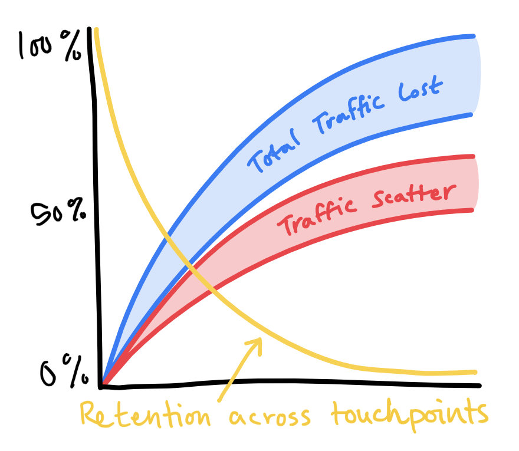

From eliminating dead-ends to improving the way we communicate, I have a lot of ideas about how to improve ServiceNow's website.
With access to the analytics dashboard and a few supportive colleagues who vetted my work, I was able to share new insights into our visitors' experience in a presentation that ultimately led to the formation of a new pillar reporting up to the VP of Digital Marketing.
As of today, -February 1st, 2021- this journey is still underway; however, now that we have an optimization group and a purpose, work is quickly progressing on our first series of tests to challenge my hypotheses.
Disclaimer: The purpose of this article is to showcase the process and rationale I employed to drive otherwise-unimaginable results for my organization.
As this work deals extensively with confidential information including marketing strategy, site traffic, conversion rates, bounce rates, marketing spend, and other data, ALL FIGURES AND METRICS ARE FABRICATED in order to protect ServiceNow's business.
Background
In the "Digital" (web-marketing) organization at ServiceNow the UX Design team is responsible for all design, strategy, and content (with approval and review from the brand team) that gets published on the "core" website.
While UX has "delivered results" to the extent that we can see engagement metrics changing over time, scrutinizing the analyses and metrics provided as "evidence of success" led me to wonder if we were really accomplishing what we set out to.
Performance indicators like "engagement" can be a valuable tool in assessing the results of an A/B test, but it's hard to say what the impact might be on the full user journey or broader outcomes without more in-depth analyses.
A big part of my job and how I bring value to my team is in scrutinizing our approaches and identifying ways we can improve -- in this case with testing rigor and deeper analysis of outcomes.
Last year, I changed departments so that I could move into a more influential role in the Marketing Organization. On my new team I've become friends with our Analytics Manager, and he recently granted me access to our Site Traffic Dashboard.
Discovery
(click to expand) collapse
Early in my time at ServiceNow, I conducted a series of interviews and usability tests to explore opportunities to improve form conversion. In my research, participants were consistently caught off-guard, upset, frustrated when they requested a demo and hit a form page instead.
Through my research I understood a pain-point, but it wasn't until I got a look at our traffic flow and engagement metrics that I really understood the problem.
Historically we've embraced a strategy of "funnel traffic to forms as quickly as possible" under the misguided notion that a flat "8%" (Reminder: this is a made-up number) of traffic converted.
Given our colossal bounce and exit-rates, however, I can see how our strategy has backfired and instead has deprived our visitors of the opportunity to "get sold ServiceNow" before they hit what essentially amounts to a pay-wall.
Having clear evidence of the outcomes I suspected still left me with the challenge of proving that we were causing the problem (and capable of turning it around).
It's easy to understand why my colleagues are focused on the form pages – they have the highest traffic and the most measurable outcomes; The trouble with this strategy, however, is that this data is artificial (figuratively AND literally in this case).
In a nutshell, people aren't visiting the forms because they want to; they're visiting the forms because we're tricking them or forcing them to. The way it inflates traffic numbers (and user frustration)... it's no wonder the bounce rates are sky high.
Research
(click to expand) collapse
It's my hypothesis that visitors are not filling the forms because we haven't convinced them that there's enough value on the other side to be worth the effort.
In my previous research, participants verbally communicated a fear that some high-pressure salesperson was going to call and harass them (or that they'd be stuck on an email list forever) if they filled out the form.
I can't change the form without causing a significant disruption to the sales pipeline, but looking at the "lower trafficked pages" (ie, all of our content pages) there's still enormous opportunity to "sell our visitors on ServiceNow" before we hit them in the face with a form.

Digging deeper into the user flow, I also made an alarming discovery: Between users scattering throughout the site or exiting completely, within a few touch-points we bleed almost 100% of our traffic... and a lot of that traffic we're spending boatloads of money to acquire.
The real challenge at this stage was finding the right samples and generating appropriate comparisons and charts to demonstrate the issues and convince the leadership team without overwhelming them with details and data. Finally after 6 weeks of analysis, preparation, and guerilla research, I was ready to present my findings to the organization.
I gave an amazing presentation
– but I guess you'll have to take my word for it –
Planning
Given our strong YoY business performance and the context of historical user-research data, my recommendation is that we start by exploring whether visitors even understand what ServiceNow does at a basic level. As a tangential challenge, I've also made recommendations to try to tackle more-existential issues like addressing our anemic return-visitor traffic.
Although our product pages are not our top-visited pages (and I can't tell you which pages are our top pages), our top dozen-plus products still get an exceptional volume of organic traffic which will more-than suffice for testing.
Our core team is composed of an SEO specialist, two analytics/testing specialists, a test engineer, a project/program manager who's helping me manage and coordinate tests, and finally I'm serving as researcher, test-designer, co-engineer, production designer, content strategist, copywriter, and product manager. Most of the team (myself included) also work on other product teams, so we've been granted an agency resource to support us with assets while we spin up the program.
Based on my user-interviews, data-analysis, and research, I came up with...
19
Pain Points
52
Test Ideas
and we're going to test them all (or at least as many as make sense as our strategy evolves)
Design
With guidance and insights from our SEO team that align with the hypothesis I offered in my presentation, I've designed new content sections, new components, and new interaction models to test my ideas.
Given our strong sales and renewal figures and the competitive marketplace, we can safely assume that our products are valuable-enough to justify the continued investment from so many major corporations.
On the other hand, our historical user-research data (or a cursory glance at the site) tells us that our web content is almost entirely "meaningless marketing fluff".
Observing the "bouncing" behavior visitors exhibit in which they navigate back-and-forth between the same few pages (like between a product page and the home page, or a product page and a related-content page), it's my hypothesis that visitors are searching desperately for a clear sense of what it is that we're offering.
While many visitors eventually -reluctantly- provide us with their personal information, most eventually just give up and leave the site. Even for the visitors who do give us their info or sign up for an account, almost none ever return or sign back in again.
With this interpretation of the data, I've recommended that we start our 'optimization' efforts by exploring whether visitors even understand what ServiceNow does at a basic level.
As a secondary goal, I'd also like to tackle the more-existential issue of our anemic return-visitor metrics.
What's Next
Our first rounds of tests are being scoped and finalized right now. As we wait for results from these tests, additional tests will be coordinated to verify other pain-points.
The Optimization group's goal is to achieve "80% confidence" in our results so that we can create guidelines with the parameters we've identified, while still leaving room for our partner-teams to make final adjustments and perform iterative testing.
After we establish a clear sequence of tests and outcomes for a pain-point, our group will share our findings with the broader organization during regularly-scheduled Product Review meetings.
Finally, as we maximize our outcomes, we'll work with other departments across the company to start baking our learnings into the global corporate marketing strategy.
Convince the organization that these issues matter enough to prioritize and address immediately
Identify strategic pages and content-sections to test my hypothesis
Create testing ideas, hypotheses, and conceptual-designs
Execute and scale controlled tests
Compile results and share design-guidelines
Evolve the program
It's been a thrilling journey so far, and I can't wait to find out if my hypotheses are right or if there are still more mysteries to unravel.

 (click to expand) collapse
(click to expand) collapse

 (click to expand) collapse
(click to expand) collapse